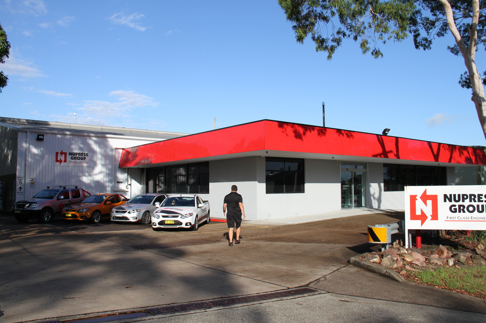

Structural Glass & Facade Engineering
Structural glass and facade
engineering for landmark
Australian projects
Nupress Facades designs and installs architectural glass and facade systems that define the visual identity of landmark Australian buildings. From frameless structural glazing to complex cable-net curtain walls, we engineer solutions that meet the most demanding aesthetic and structural requirements.
What We Deliver
Precision engineering
meets architectural vision
Nupress Facades brings manufacturing precision to the architectural world. Every system is engineered with the same rigour we apply to aerospace components — because when glass is structural, precision is everything.
-
Frameless Structural Glazing Clean, uninterrupted glass facades with concealed structural fixings
-
Point-Fixed Glazing Systems Spider fittings, patch plates, and cast spider assemblies
-
Curtain Wall Systems Unitised and stick-built curtain wall for commercial projects
-
Cable-Net Facade Systems High-tensile cable assemblies for dramatic architectural statements
-
Balustrade & Canopy Systems Structural glass balustrades, canopies, and entry systems
-
In-House Fabrication Precision CNC-machined fixings and hardware manufactured on-site

Technical Data
Facades Specifications
| System / Feature | Specification |
|---|---|
| Frameless Glazing | Toughened/laminated glass, structural silicone, concealed fixings |
| Point-Fixed Systems | Cast spider assemblies, bolt-fixed, patch plate systems |
| Curtain Wall | Unitised and stick-built systems, aluminium framing |
| Cable-Net | High-tensile stainless steel cable assemblies with precision fittings |
| Glass Types | Toughened, laminated, IGU double/triple, fire-rated, acoustic |
| Hardware Materials | 316 SS, duplex stainless, aluminium 6063/6061, bronze |
| Wind Rating | Designed to AS1170 — site-specific structural engineering |
| Compliance | NCC (BCA), AS1288 Glass in Buildings, AS4100 Steel Structures |
| Services | Design, fabrication, installation, maintenance |
| Location | Cardiff, Newcastle NSW 2285 — projects Australia-wide |
Discuss your facade project
From concept through to installation — speak to our facades team.